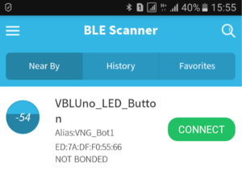
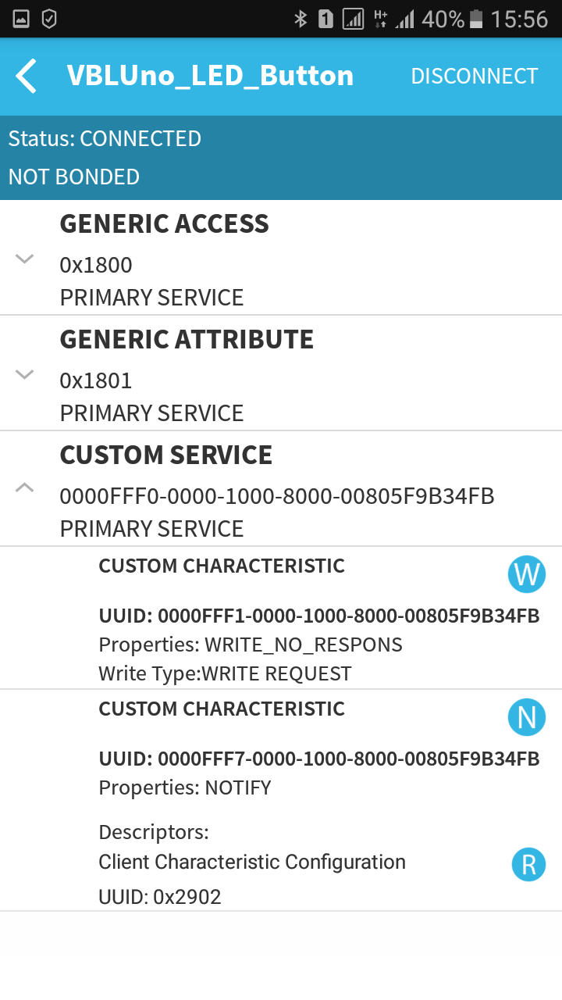

ĐIỀU KHIỂN VÀ GIÁM SÁT THIẾT BỊ BẰNG SMARTPHONE QUA BLE
Điều khiển thiết bị qua BLE với VBLUno-LED BUTTON Service
-
Trong các bài viết trước, chúng tôi đã trình bày một số ứng dụng điển hình của giao tiếp Bluetooth Low Energy (BLE) như: Heart Rate Mesuarement, Health Thermometer, Beacons. Các ứng dụng này sử dụng các services đã được Bluetooth SIG định nghĩa sẵn. Danh sách các services có thể xem tại ĐÂY
-
Có hai điều bạn cần nhớ:
-
Dữ liệu truyền qua giao tiếp BLE là dữ liệu được cấu trúc hóa, cụ thể chúng được tổ chức thành các services, trong services lại bao gồm các characteristics.
-
Bluetooth SIG định nghĩa sẵn một số services cho các ứng dụng điển hình, nhưng rõ ràng là chúng không đầy đủ, ví dụ như ứng dụng điều khiển một thiết bị bất kỳ. Để phục vụ các ứng dụng như vậy, chúng ta có thể tự định nghĩa các services cho từng trường hợp cụ thể.
-
-
Các ứng dụng điều khiển thiết bị yêu cầu khả năng ghi dữ liệu từ GATT Server (Smartphones) xuống GATT Client (BLE Device) và ngược lại. Bài viết này chúng tôi minh họa việc thiết kế và cài đặt một services đơn giản cho BLE, ứng dụng điều khiển LED và nhận tín hiệu trạng thái BUTTON, gọi tắt là VBLUno – LED BUTTON Service.
-
VBLUno - LED BUTTON Service
Cấu trúc của VBLUno-LED BUTTON Service

-
Service này bao gồm hai characteristic cho hai mục đích khác nhau:
-
LED Characteristic: Giúp Master truyền tín hiệu điều khiển xuống thiết bị, với kiểu WRITE. Tương tự, các bạn cũng có thể chuyển thành tín hiệu điều khiển bất kỳ, không chỉ để bật tắt LED.
-
BUTTON Characteristic: Với kiểu NOTIFY, characteristic này cho phép thiết bị BLE có thể gửi giá trị cập nhật đến Master. Ta có thể sử dụng characteristic này để gửi giá trị trạng thái nút bấm, giá trị cảm biến lên Smartphones để xử lý. Với characteristic kiểu Notify, tối thiểu chúng ta cần một Descriptor đi kèm, đó là Client Characteristic Configuration Desp. Descriptor này nằm ở phía Master giúp cho phép nhận hoặc không nhận giá trị Notify gửi lên từ BLE Device.
-
-
Như vậy, với Services được thiết kế riêng này, chúng ta có thể cài đặt tính năng điều khiển/giám sát thiết bị bất kỳ từ các điện thoại thông minh (hoặc Tablet/PC) qua giao tiếp BLE. Phần tiếp theo trình bày việc cài đặt service này trên Arduino IDE sử dụng kit VBLUno của VNG IoTLab.
Ví dụ demo trên bo mạch VBLUno
-
Bài toán minh họa:
-
Bo mạch VBLUno v2 kết nối với Smartphone thông qua giao tiếp BLE;
-
Chức năng:
-
Smartphone –> VBLUno: Điều khiển bật tắt LED bằng Smartphones;
-
VBLUno –> Smartphone: VBLUno truyền một biến giá trị (tăng từ 0x00 đến 0xFF) theo chu kỳ 1 giây.
-
-
Trên smartphone sử dụng phần mềm BLE Scanner để minh họa.
-
-
Thực hiện:
-
Tải mã nguồn chương trình cho VBLUno v2 tại ĐÂY
-
Upload code xuống bo mạch VBLUno v2. Sau đó chuyển về chế độ Application để chạy chương trình.
-
Một số hình ảnh minh họa:
-
Thiết bị VBLUno hiển thị trên BLE Scanner

Các services được cài đặt trong VBLUno v2

-
Trong hình 3, chương trình BLE Scanner thực hiện discovery thiết bị của chúng ta và tìm ra 3 services. Trong đó GAP và GATT Services là hai service mặc định của BLE Protocol Stack. Nội dung về GAP và GATT đã được trình bày trong các bài viết trước. Services còn lại là CUSTOM SERVICE, đây là service đã được cài đặt trong chương trình (VBLUno-LED BUTTON Service).
-
Để truyền lệnh điều khiển LED trên bo mạch VBLUno, nhấn ký tự W tại Characteristic đầu tiên. Truyền giá trị 0 để tắt LED, 1 để bật LED. Xem hình 4
Giao diện ghi dữ liệu từ Smartphone xuống VBLUno

- Để cho phép nhận dữ liệu Notify từ VBLUno, trên app bạn nhấn vào nút N tại Characteristic thứ 2, sau đó nút N sẽ chuyển sang màu xanh lá cây. Khi đó app bắt đầu nhận dữ liệu từ VBLUno (Xem hình 5)
App nhận giá trị notify từ VBLUno

Cửa sổ terminal trên PC để debug

-
Mã nguồn của chương trình không có nhiều điểm mới, mình đã ghi chú khá đầy đủ trong code, các bạn có thể dễ dàng tìm hiểu nhé.
-
Trên đây chúng tôi đã trình bày cách thiết kế và cài đặt một service riêng cho từng ứng dụng cụ thể, dựa trên đó, các bạn có thể dễ dàng tùy biến cho ứng dụng của mình.
-
Mọi thắc mắc các bạn có thể trao đổi tại:
https://www.facebook.com/bleviet/messages
https://github.com/VNGIoTLab/Arduino_VBLUno_nRF51822/issues